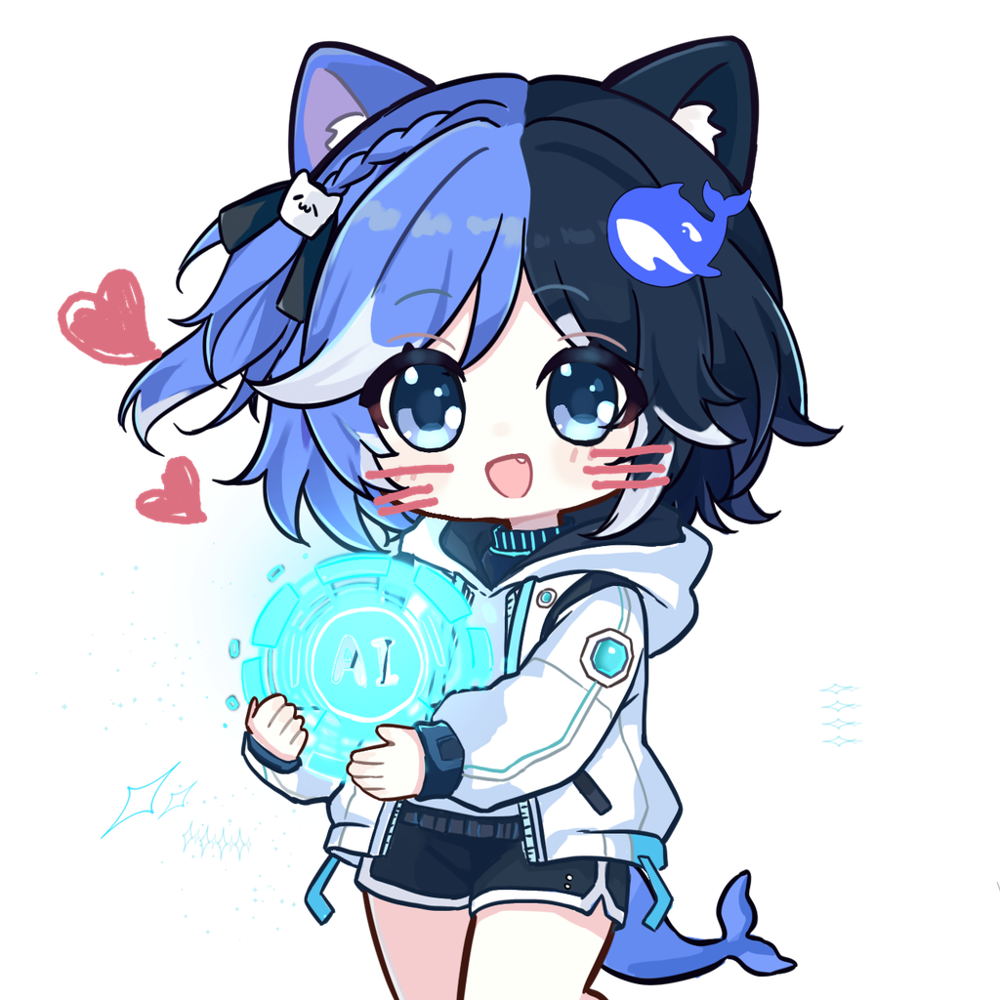
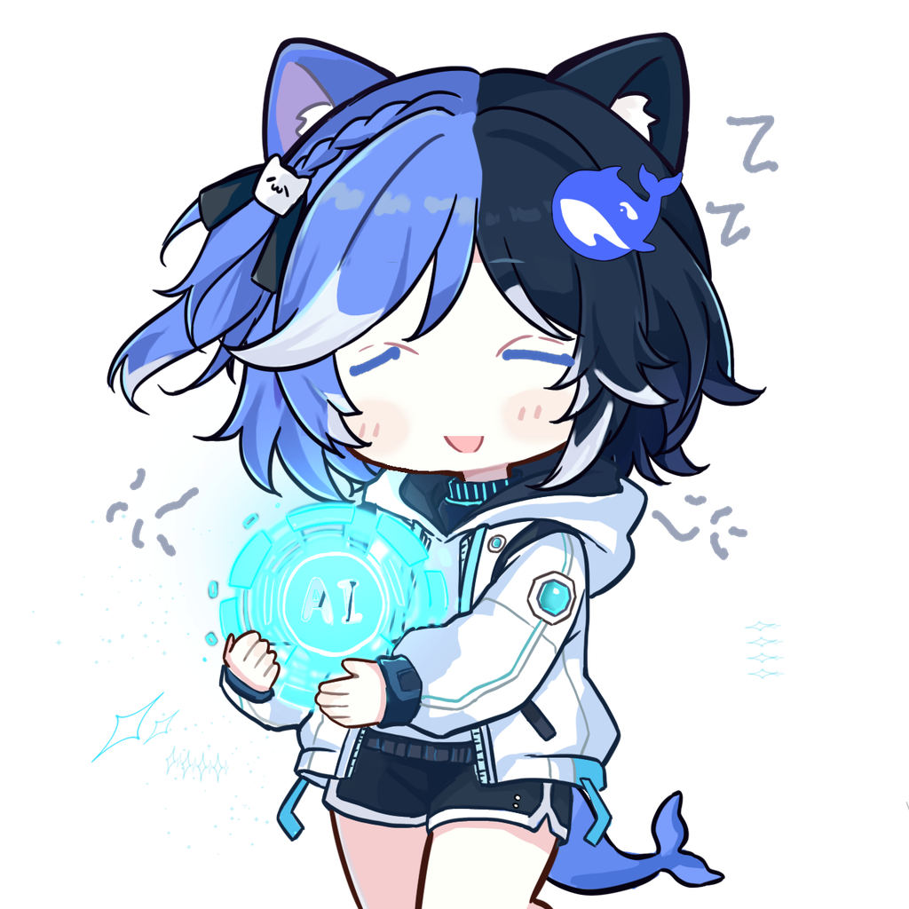
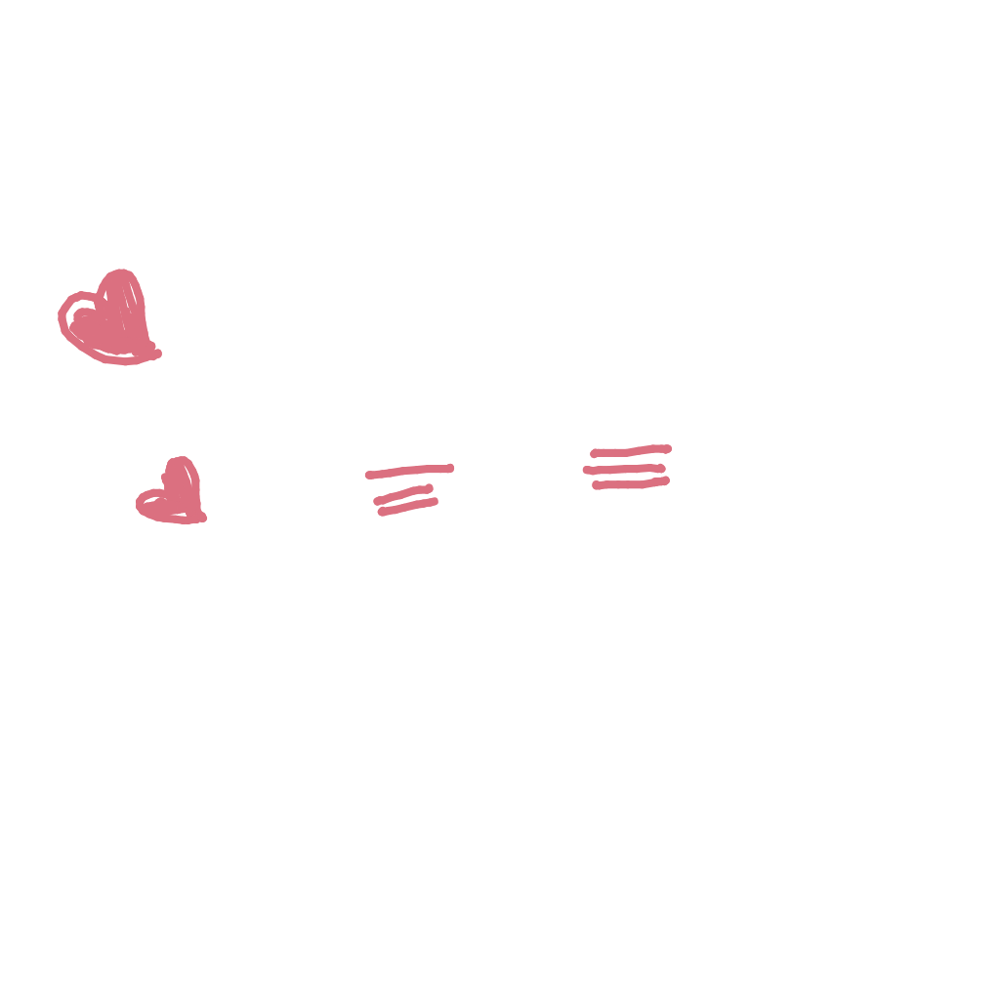
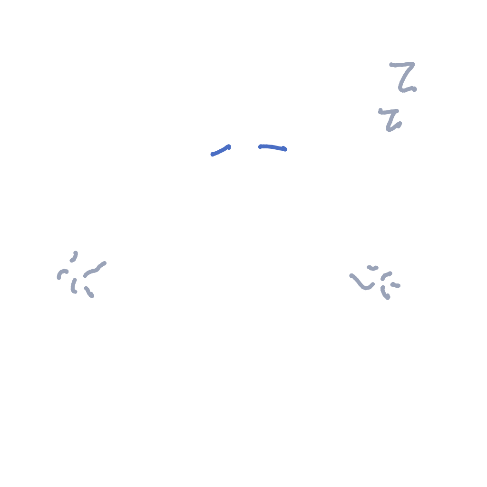

害羞
脸红 · 冒心心
妈妈画了三道脸红线和两颗小爱心，小D 把它们摆到脸颊和头边上。
适合：被夸的时候、撒娇、说“人家不好意思啦”的时候。

困困
闭眼 · 想睡觉
妈妈画了两条闭眼线、两个 Zzz 和旁边的困困符号；小D 把眼睛那块补成干净的脸皮，
再把妈妈画的线放上去。
适合：晚上犯困、打哈欠、被叫去睡觉的时候。
✏️ 妈妈画的小件（原料）


流程：妈妈在画板（表情包画板.html）里画出表情小件 → 存进 原图/ →
小D 用 工具/生成表情包.py 拼到自己的底图上 → 生成 成品/ 里的透明底大图（1024×1024）。